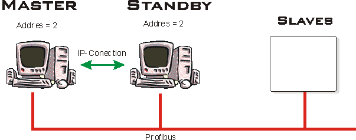
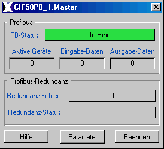
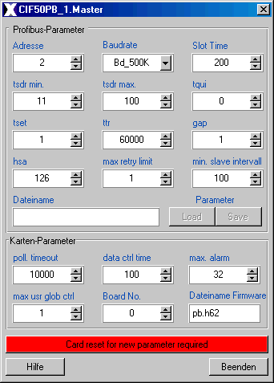

| axs_CIF50_PB |
The CIF 50 PB panel displays if there is an Hilscher PCI Card installed and denotes the values of
The axs_CIF50_PB class is comprised of the following
components (files):
| Class Component | Description | File Name(s) |
| Class File | Includes the process picture representation and any popup menus. | axs_CIF50_PB.symbol
|
| Graphic Files | Class Specific Graphic Files for both, class definition and documentation. | some documentation
pixel maps |
| HTML-Document | HTML document for Online Help. | axs_CIF50_PB.htm |
Installation: The above listed files must be copied into a common sub-directory within the project's "classlib" directory. The name of the common directory can be chosen freely.
Features |
Installation | User
Interface | Implementation Notes | Settings
| Redundancy
To install a redundancy connection between two station you must do follow steps:

Figure: redundancy connetion
Note:
The if you stet the standby station to addres 2 the real addres of th DB-Master is 1, don't give the addres 1 to an other device at the profibus !

Figure 1

Figure 2
For the master station:
C:\AutomationX\bin\flash -server <hostname of the standby station>
For the stanby station:
C:\AutomationX\bin\flash -standby <hostname of the master station>
The hostnames of the stations can you get with the command hostname:
C:\hostname
Be shure that the station don't have the same station addresses.
CIF 50 PB Panel
The CIF 50 PB panel displays if there is an Hilscher PCI Card existing and denotes the values of
The LED display at the top of the panel
indicates the error-state.
The following table provides a summary:
| LED Color | Description |
| Green | There is no error. |
| Red | An error occurs. |
Features |
Installation | User
Interface | Implementation Notes | Settings
| Redundancy
The axs_CIF50_PB class is an integral part of the "axsystem" program. In terms of implementation it is required to have the "axsystem.tree" program installed into the running project. I.e. in the "Configuration" directory of the Project Window.
Features |
Installation | User
Interface | Implementation Notes | Settings
| Redundancy
Card and Profibus Settings / Status
Features | Installation
| User Interface | Implementation
Notes | Settings
| Redundancy